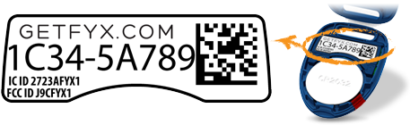

Get Gimbal up and running in your iOS App.
The following steps will set up an application in Xcode ready for enabling Gimbal features.
Make sure you are:
In Xcode choose File > New > Project and create a new Application
Please select the appropriate target from the list in the left column of the project editor
To add iOS Frameworks and Libraries, please select the 'Build Phases' tab from the project editor. Then in the 'Link Binary With Libraries', select '+' to add add new items
Having trouble adding these to your project? Here's some help
Important Right click the Project name and choose the "Add files to ..." option to add these frameworks.
Note You will find these frameworks in the
Frameworks folder inside the Gimbal SDK zip file.
Please select the checkbox for 'Copy items if needed'.
It is strongly recommended to add the Gimbal Frameworks using this method to ensure that the Target Membership checkbox is enabled properly. If an alternate method is used, then the Target Membership of the frameworks must be verified and checked.
Your frameworks directory should now look like this:
For each Gimbal Framework, verify the Target Membership checkbox is set:
Verify your deployment target matches the iOS version of your device:
Follow the link below to create your application in Manager.
Bundle Identifier is needed when you register your application. For example bundle identifier is generated during Xcode project creation

Once your application is created the generated API key will be available.
Copy API key you generated in the Gimbal Manager
Create a plist file named UserContext.plist in your project and add the following
properties. Insert your production api key for key PRODUCTION_API_KEY as shown below.
Add this code to the top of your AppDelegate implementation (.m) file.
#import <ContextCore/QLContextCoreConnector.h>
Add this code to your application: didFinishLaunchingWithOptions: method in your AppDelegate.
QLContextCoreConnector *connector = [QLContextCoreConnector new];
[connector enableFromViewController:self.window.rootViewController success:^
{
NSLog(@"Gimbal enabled");
} failure:^(NSError *error) {
NSLog(@"Failed to initialize gimbal %@", error);
}];
Important The location of this code in your
application will
depend on your design and intended usage of Gimbal. For the purpose of demonstrating how to quickly
get an application functioning we have placed it in the AppDelegate
In the Info.plist file located in the 'Supporting Files' folder, add a new entry with Key 'NSLocationAlwaysUsageDescription'
The following steps will allow you to use Gimbal Geofencing features in your application.
Create a geofence place for your current location so you will see a place event trigger when your application starts.
Note Make sure the geofence you create is at your current location if you want it to trigger when your app launches.

To receive geofence events you must add the <QLContextPlaceConnectorDelegate>
protocol to your AppDelegate.h and add a QLContextPlaceConnector property.
#import <ContextLocation/QLContextPlaceConnector.h>
@interface AppDelegate : UIResponder <UIApplicationDelegate, QLContextPlaceConnectorDelegate>
...
@property (nonatomic) QLContextPlaceConnector *placeConnector;
...
Add the didGetPlaceEvent: method to your AppDelegate.m class. This method
is
called when a geofence event is detected.
#import <ContextLocation/QLPlaceEvent.h>
#import <ContextLocation/QLPlace.h>
...
- (void)didGetPlaceEvent:(QLPlaceEvent *)placeEvent
{
NSLog(@"did get place event %@", [placeEvent place].name);
}
To receive the geofence events you must set your AppDelegate as the delegate on the
QLContextPlaceConnectorDelegate.
Do this in your application: didFinishLaunchingWithOptions: method (after the Core Connector is enabled).
- (BOOL)application:(UIApplication *)application didFinishLaunchingWithOptions:(NSDictionary *)launchOptions {
...
self.placeConnector = [[QLContextPlaceConnector alloc] init];
self.placeConnector.delegate = self;
...
Note When you launch the application you will have to accept the Gimbal Terms of Service.
Once Gimbal detects you are in the geofence you created in the Gimbal Manager you will see a log entry that looks like this.
2013-03-28 11:17:58.947 myproduct[11532:907] did get place event My Place
Create Your Gimbal Application in the Gimbal Manager.
You will be presented with a form where you will select the iOS platform and enter a bundle ID.
Hit the 'Generate' button. Once finished, your app will have a Proximity Application ID, Secret and Callback URL.
Important You'll need your Proximity Application ID, Secret and Callback URL to run your app.
Add this code to the top of your AppDelegate implementation (.m) file.
#import <FYX/FYX.h>
Add this code to your didFinishLaunchingWithOptions: method, inserting your specific App
ID, App Secret, and Callback URL.
[FYX setAppId:@"your-app-id" appSecret:@"your-app-secret" callbackUrl:@"your://app-url"];
Important The values you use for App ID, App Secret, and Callback URL should match the values from the Proximity API Key you created in the Developer Portal.
This call registers the application with the server and starts bluetooth scanning.
#import <FYX/FYX.h>
...
[FYX startService:self];
Note You must add the
<FYXServiceDelegate> protocol to your class.
Once the service start has been attempted by calling startService
above, one of the following methods will be invoked on your delegate object once the status of the service
has been determined.
Important The SDK will not function properly until the service has successfully started. If you attempt further calls into the SDK before receiving a callback indicating the service has successfully started, they will be rejected by the server.
#import <FYX/FYX.h>
...
- (void)serviceStarted
{
// this will be invoked if the service has successfully started
// bluetooth scanning will be started at this point.
NSLog(@"FYX Service Successfully Started");
}
#import <FYX/FYX.h>
...
- (void)startServiceFailed:(NSError *)error
{
// this will be called if the service has failed to start
NSLog(@"%@", error);
}
This call creates a FYXVisitManager object and will trigger the callback to
your
delegate of
sightings using the default scanning options. Using this call you will be notified of
sightings
for
proximity devices your application is authorized for.
#import <FYX/FYXVisitManager.h>
...
@property (nonatomic) FYXVisitManager *visitManager;
...
self.visitManager = [FYXVisitManager new];
self.visitManager.delegate = self;
[self.visitManager start];
At this point the SDK will be scanning for Bluetooth transmission. In order for your app to received sightings, implement the following.
To receive sightings you must add the <FYXVisitDelegate> protocol
to your class and set the delegate on your FYXVisitManager object.
#import <FYX/FYXVisitManager.h>
#import <FYX/FYXTransmitter.h>
...
- (void)didArrive:(FYXVisit *)visit;
{
// this will be invoked when an authorized transmitter is sighted for the first time
NSLog(@"I arrived at a Gimbal Beacon!!! %@", visit.transmitter.name);
}
- (void)receivedSighting:(FYXVisit *)visit updateTime:(NSDate *)updateTime RSSI:(NSNumber *)RSSI;
{
// this will be invoked when an authorized transmitter is sighted during an on-going visit
NSLog(@"I received a sighting!!! %@", visit.transmitter.name);
}
- (void)didDepart:(FYXVisit *)visit;
{
// this will be invoked when an authorized transmitter has not been sighted for some time
NSLog(@"I left the proximity of a Gimbal Beacon!!!! %@", visit.transmitter.name);
NSLog(@"I was around the beacon for %f seconds", visit.dwellTime);
}
The following example below shows the implementation of the FYXServiceDelegate, FYXVisitManager and the FYXVisitDelegate in the iOS default ViewController.m file. This is for example purposes only.

Activation tells Gimbal to associate the Beacon with your account.
Note You'll need to open the Beacon to find the ID.
Once Gimbal Proximity detects the beacon you activated in the Gimbal Manager you will see a log entry that looks like this.
2013-03-28 11:17:58.947 myproduct[11532:907] I received a FYX sighting!!! MyBeacon
For additional details on how to leverage the SDK functionality, refer to the sample applications and documentation included in the zip file provided.